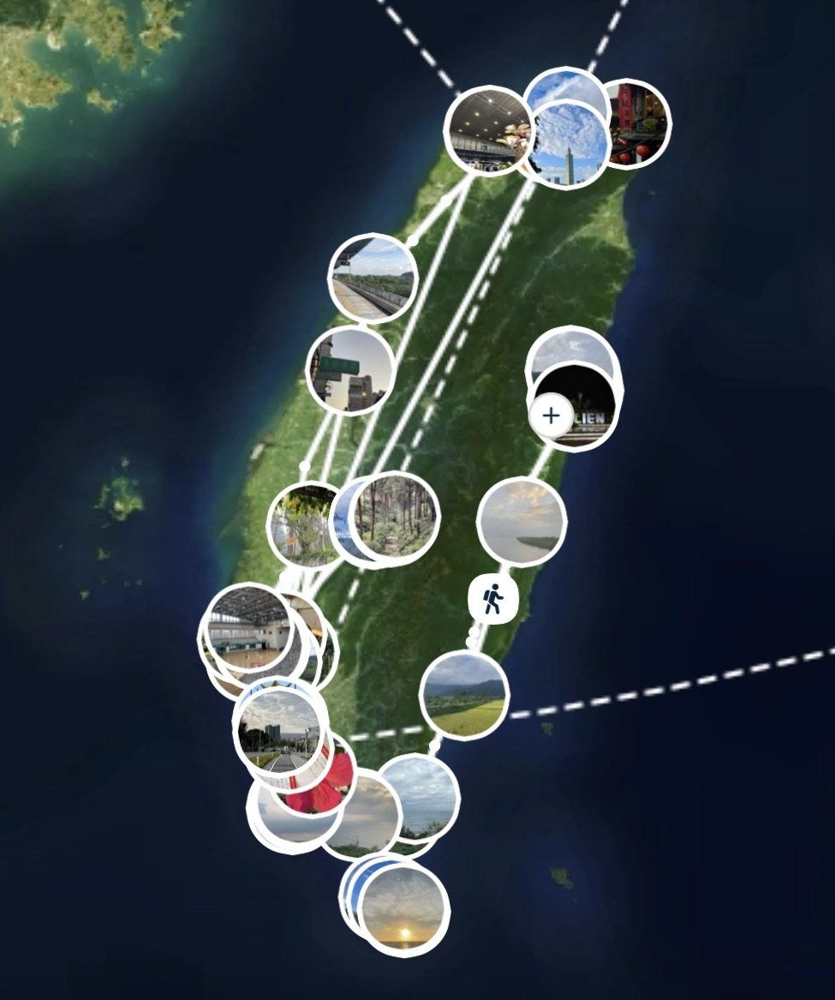
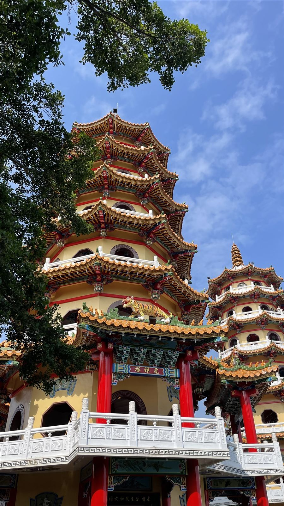
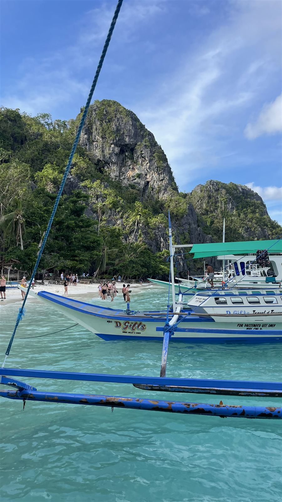
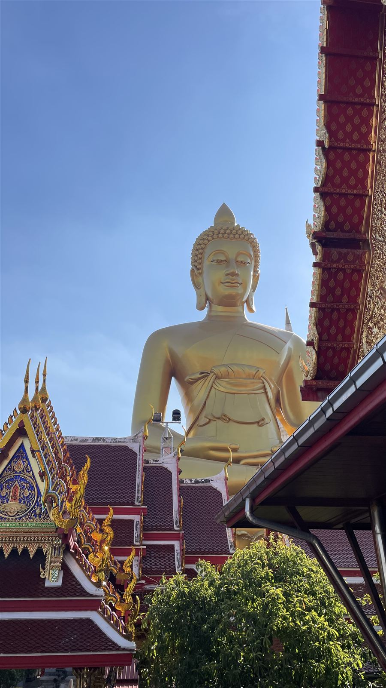
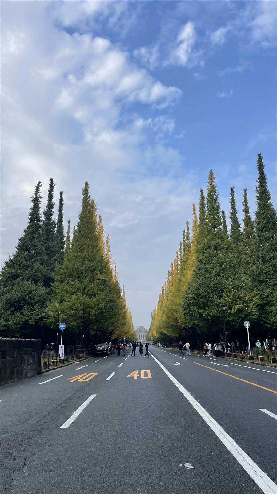

Une autre culture universitaire
Des cours d'ingénierie entièrement en anglais, d'autres méthodes d'enseignement et d'évaluation, et une vie de campus partagée avec des étudiants du monde entier.
// DOSSIER N° JB-2027 · RÉV. A
Étudiante ingénieure Aéronautique & Spatial à l'IPSA, filière CAE Cellule Aéronautique.
Recherche stage de fin d'études · 6 mois · dès mars 2027
00 · PROFIL
Étudiante en 5e année à l'IPSA, après la filière Véhicules aérospatiaux puis Mécanique & Structure, je me spécialise en CAE Cellule Aéronautique. J'aime les sujets où la simulation numérique doit être confrontée au réel : maillages, conditions aux limites, validation analytique.
Mais un bon calcul ne suffit pas : il faut aussi comprendre le besoin, travailler en équipe et mener un projet jusqu'au bout. C'est cette dimension que j'aime tout autant : la gestion de projet, au contact des utilisateurs et d'un client industriel.
01 · PROJETS & EXPÉRIENCES
Une sélection de stages et de projets : simulation numérique, calcul de structures, CAO et gestion de projet.
02 · PLAN DE VOL
Chaque étape est un point de passage.
03 · MISSION INTERNATIONALE
Un semestre d'échange au département d'Aéronautique et d'Astronautique de NCKU, l'une des universités d'ingénierie les plus réputées de Taïwan.
Bien plus qu'un semestre de cours : la découverte d'une nouvelle culture, à l'université comme dans la vie de tous les jours, et d'un nouveau continent. Une expérience qui m'a rendue plus autonome et capable de m'adapter partout.

En plus du cursus d'ingénierie, j'ai suivi 4 heures de chinois par semaine : langue et culture chinoises, en partant de zéro.
Un vrai défi, mais aussi la meilleure porte d'entrée pour comprendre le pays et échanger avec les Taïwanais au quotidien.
VIVRE À L'AUTRE BOUT DU MONDE
Des cours d'ingénierie entièrement en anglais, d'autres méthodes d'enseignement et d'évaluation, et une vie de campus partagée avec des étudiants du monde entier.
Une langue, des habitudes, une cuisine et un rythme de vie complètement différents, à apprivoiser au quotidien.
Partir à la découverte de Taïwan d'un bout à l'autre, puis d'autres pays d'Asie, chacun avec sa propre culture.
CE QUE ÇA M'A APPORTÉ
De l'autonomie, en organisant toute ma vie à des milliers de kilomètres de chez moi, et une vraie capacité à m'adapter : à une autre langue, une autre culture, d'autres façons de travailler. Aujourd'hui, je sais que je peux trouver ma place partout.
EXPLORER L'ASIE
Ce semestre a aussi été l'occasion de découvrir Taïwan de long en large, puis de partir à la rencontre d'autres pays d'Asie : les Philippines, la Thaïlande et le Japon.




Photos : Julie Bodelot
04 · LEADERSHIP & ÉQUIPAGE
Je joue au basket depuis 17 ans, en club au niveau régional. Aujourd'hui, je suis capitaine de l'équipe féminine de mon école : j'encourage l'équipe, j'organise la vie du groupe et je m'occupe aussi de nos réseaux sociaux.
05 · INSTRUMENTS DE BORD
06 · CONTACT
Je recherche un stage de fin d'études de 6 mois à partir de mars 2027 dans l'aéronautique ou le spatial. Simulation numérique, calcul de structures ou gestion de projet : je suis ouverte à des missions variées, techniques comme transverses.